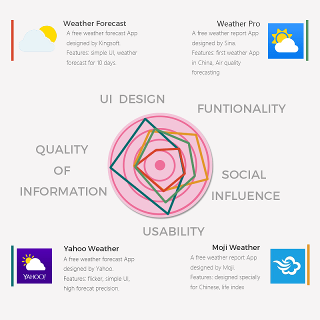

How to make it a simple one?
Competitive analysis
In order to further our exploration of Chinese weather apps, we conducted competitive analysis of four popular weather apps

Needfinding
Interview
We then inverviewed 10 college students. We asked them about advantages and disadvantages of weather apps they are using, and their desirable weather apps. Then summarized their thoughts.
Discussion
After our investigation, we found that college students don't ask for much regarding weather apps. Their main concerns are:
- rainy or sunny?
- haze or clean?
- what to wear today?
Hence, we decided to reduce the number of weather typies to only six.